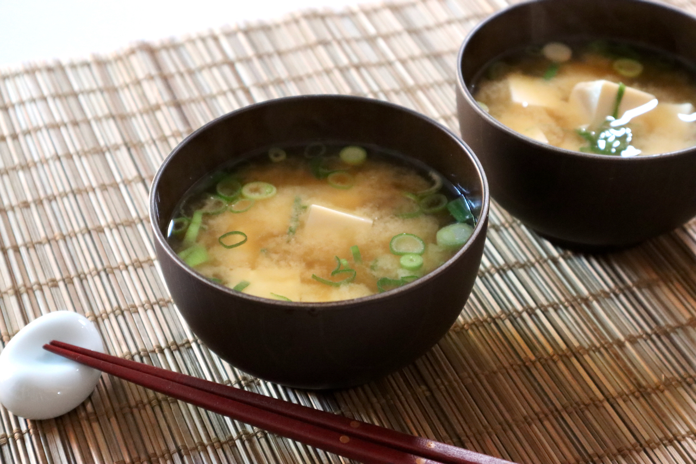

Miso Soup

Miso Soup is a soup flavored with Miso Paste and usually includes Tofu and vegetables. It is a very essential dish of
Japanese cuisine, and comes with any traditional Japanese meal.
Ingredients
- 4 cups of dashi
- 1 package of tofu
- 4-5 Tbsp of miso paste
- 2 green onions chopped fine
Instructions
- Boil Dashi. Slice green onions very thinly. Cut tofu into 1/2" cubes and add to Dashi.
- Reduce heat to low and dissolve miso paste in the Dashi. Take care not to boil.
- Add green onions and remove from heat.